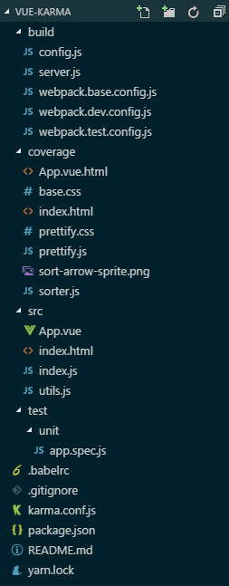

由于准备在项目中应用单元测试，于是先查文档完成了一个简单的测试demo
Demo: here
karma是一个启动器，可以测试在浏览器中运行的代码，此处是配合PhantomJs启动无头浏览器；mocha是一个测试框架，但是本身并不带断言库；所以引用了chai当断言库，chai提供了多种断言语法，此处选用了expect。3者配合可以实现自动化测试
目录结构:

1. 正常搭建vue+webpack开发环境
如目录结构所示，新建build文件夹用于存放开发配置，src目录用户存放项目源码
2. 安装karma
个人喜欢安装项目依赖时用yarn，其余时候用npm
先全局安装: npm install -g karma-cli
然后再安装到项目中: yarn add karma --dev
再在项目的目录下运行karma初始化命令: karma init
部分选项可以用键盘tab键切换，第一步是选择测试框架，此处可以选择 jasmine,mocha,qunit,nodeunit,nunit，我选择了 mocha
第二步是是否使用 Require.js，此处选择不使用
第三步是选择测试的浏览器环境，可以选择 Chrome,ChromeCanary,Firefox,Safari,PhantomJS,Opera,IE，最方便的就是电脑上有什么浏览器就选什么浏览器，不过测试js和vue组件的话不需要界面，所以选择无界面浏览器工具 PhantomJS。选择 PhantomJS 的话需要本机安装 PhantomJS 工具包
第四步是测试文件位置，可以用匹配符，此处填写 test/unit/**/*.spec.js 表示在 test/unit下所有以.spec.js结尾的文件都是测试文件 (由于目录下没有文件，所以会报警告找不到文件)
第五步是排除文件配置，写法同上
第六步是是否开启监听，初步搭建的时候可以关闭
完毕后可以在项目根目录下看到 karma.conf.js 文件，刚才填写或选择的配置项都在里面，随时可以修改
3. 安装mocha+chai
正常安装 yarn add mocha chai --dev
安装karma扩展 yarn add karma-mocha karma-webpack --dev
安装PhantomJS启动 yarn add karma-phantomjs-launcher --dev
4. 配置
karma配合webpack使用，需要先写好webpack的配置文件，项目中存放在 build/webpack.test.config.js
1 | ; |
2 | |
3 | const path = require('path'); |
4 | const webpack = require('webpack'); |
5 | |
6 | module.exports = { |
7 | entry: './src/index.js', |
8 | module: { |
9 | loaders: [ |
10 | { |
11 | test: /\.js$/, |
12 | exclude: /(node_modules|bower_components)/, |
13 | loader: 'babel-loader' |
14 | }, |
15 | { |
16 | test: /\.vue$/, |
17 | loader: 'vue-loader' |
18 | } |
19 | ] |
20 | }, |
21 | resolve: { |
22 | extensions: ['.js', '.vue'], |
23 | alias: { |
24 | vue$: 'vue/dist/vue.js', |
25 | '@src': path.resolve(__dirname, '../src') |
26 | } |
27 | } |
28 | }; |
然后修改 karma.conf.js
1 | const webpackConfig = require('./build/webpack.test.config'); |
再在配置里添加配置
1 | webpack: webpackConfig, |
2 | webpackMiddleware: { |
3 | noInfo: true |
4 | } |
修改 preprocessors 配置用webpack处理
1 | preprocessors: { |
2 | 'test/unit/**/*.spec.js': ['webpack'] |
3 | } |
5. 编写测试
在 test/unit 下新建测试文件 app.spec.js，vue的测试写法可以参考 官方文档
先看被测试的文件 App.vue 的内容
1 | <template> |
2 | <div class="app">msg:{{msg}}</div> |
3 | </template> |
4 | <script> |
5 | export default { |
6 | data() { |
7 | return { |
8 | msg: 'this is message.' |
9 | }; |
10 | }, |
11 | mounted() { |
12 | this.msg = 'mounted!'; |
13 | }, |
14 | methods: { |
15 | hello(w) { |
16 | return 'hello' + w; |
17 | } |
18 | } |
19 | }; |
20 | </script> |
然后编写测试语句
1 | import App from '@src/App.vue'; |
2 | import Vue from 'vue'; |
3 | |
4 | var expect = require('chai').expect; |
5 | |
6 | describe('app组件', () => { |
7 | it('检查mounted', () => { |
8 | expect(App.mounted).to.a('function'); |
9 | }); |
10 | it('检查data', () => { |
11 | expect(App.data).to.a('function'); |
12 | }); |
13 | it('检查hello方法', () => { |
14 | const vm = new Vue(App).$mount(); |
15 | expect(vm.hello).to.a('function'); |
16 | expect(vm.hello(' world!')).to.equal('hello world!'); |
17 | }); |
18 | it('检查初始msg字段', () => { |
19 | expect(App.data).to.a('function'); |
20 | expect(App.data().msg).to.equal('this is message.'); |
21 | }); |
22 | it('检查msg字段', () => { |
23 | const vm = new Vue(App).$mount(); |
24 | expect(vm.msg).to.equal('mounted!'); |
25 | }); |
26 | it('检查渲染实例', () => { |
27 | const Ctor = Vue.extend(App); |
28 | const vm = new Ctor().$mount(); |
29 | expect(vm.$el.textContent).to.equal('msg:this is message.'); |
30 | }); |
31 | it('检查渲染更新', done => { |
32 | const vm = new Vue(App).$mount(); |
33 | vm.msg = 'message2'; |
34 | // 在状态改变后和断言 DOM 更新前等待一刻 |
35 | Vue.nextTick(() => { |
36 | expect(vm.$el.textContent).to.equal('msg:message2'); |
37 | done(); |
38 | }); |
39 | }); |
40 | }); |
6. 开启测试
在根目录下运行 karma start 开启测试服务器 (如果没有全局安装部分模块，可以使用 ./node_modules/.bin/karma start 运行)
如果一切正常，再开一个命令窗口运行 karma run 就可以看到测试结果了
浏览器输入
http://localhost:9876可以看到测试服务器的界面
7. 测试覆盖率报告
基于webpack2.0+，需要安装一些依赖 yarn add karma-coverage karma-coverage-istanbul-reporter istanbul-instrumenter-loader --dev
同时修改一下配置，webpack.test.config.js:
1 | { |
2 | test: /\.vue$/, |
3 | loader: 'vue-loader', |
4 | options: { |
5 | loaders: { |
6 | js: 'babel-loader' |
7 | }, |
8 | postLoaders: { |
9 | js: 'istanbul-instrumenter-loader?esModules=true' |
10 | } |
11 | } |
12 | } |
karma.conf.js 中添加或修改配置:
1 | coverageIstanbulReporter: { |
2 | reports: ['text-summary', 'html'], |
3 | fixWebpackSourcePaths: true |
4 | }, |
5 | reporters: ['progress', 'coverage-istanbul'] |
然后按照步骤6运行，就会在根目录下生成 coverage 文件夹，打开 index.html 就能看到测试覆盖率报告了
etc…